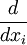
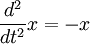

MATLAB Programming/Symbolic Toolbox
From Wikibooks, the open-content textbooks collection
Contents[hide] |
[edit] Introduction to the Symbolic Math Toolbox
The symbolic toolbox is a bit difficult to use but it is of great utility in applications in which symbolic expressions are necessary for reasons of accuracy in calculations. The toolbox simply calls the MAPLE kernel with whatever symbolic expressions you have declared, and then returns a (usually symbolic) expression back to MATLAB. It is important to remember that MAPLE is not a numeric engine, which means that there are certain things it doesn't let you do that MATLAB can do. Rather, it is useful as a supplement to provide functions which MATLAB, as a numerical engine, has difficulty with.
The symbolic math toolbox takes some time to initialize, so if nothing happens for a few seconds after you declare your first symbolic variable of the session, it doesn't mean you did anything wrong.
The MATLAB student version comes with a copy of the symbolic math toolbox.
[edit] Symbolic Variables
You can declare a single symbolic variable using the 'sym' function as follows.
>> a = sym('a1')
a = a1
You can create arrays of symbolic expressions like everything else:
>> a2 = sym('a2');
>> a = [a1, a2]
a = [ a1, a2]
Symbolic variables can also be declared many at a time using the 'syms'
function. By default, the symbolic variables created have the same
names as the arguments of the 'syms' function. The following creates
three symbolic variables, a b and c.
>> syms a b c >> a a = a
[edit] Symbolic Numbers
Symbolic numbers allow exact representations of fractions, intended to help avoid rounding errors and representation errors. This section helps explain how to declare them.
If you try to add a number into a symbolic array it will automatically turn it into a symbolic number.
>> syms a1, a2; >> a = [a1, a2]; >> a(3) = 1; %would normally be class 'double' >> class(a(3)) ans = sym
Symbolic numbers can also be declared using the syntax a(3) = sym('number'). The difference between symbolic numbers and normal MATLAB numbers is that, if possible, MAPLE will keep the symbolic number as a fraction, which is an exact representation of the answer. For example, to represent the number 0.5 as a fraction, you can use:
>> sym(0.5) ans = 1/2
Here, of course, MATLAB would normally return 0.5. To make MATLAB change this back into a 'double', type:
>> double(ans) ans = 0.5000
Other class conversions are possible as well; for instance, to change it into a string use the 'char' function. There is no function to directly change a symbolic variable into a function handle, unfortunately.
A caveat: Making a symbolic variable of negative exponentials can create problems if you don't use the correct syntax. You cannot do this:
>> sym('2^-5')
??? Error using ==> sym.sym>char2sym
Not a valid symbolic expression.
Instead, you must do this:
>> sym('2^(-5)')
ans = 2^(-5)
MAPLE is thus more picky about what operators you can use than MATLAB.
[edit] Symbolic Functions
You can create functions of symbolic variables, not just the variables themselves. This is probably the most intuitive way to do it:
>> syms a b c %declare variables >> f = a + b + c ans = a + b + c
If you do it this way, you can then subsequently perform substitutions, differentiations, and so on with respect to any one of these variables.
[edit] Substituting Values into Symbolic Variables
Substitutions can be made into functions of symbolic variables. Suppose you defined the function f = a + b + c and wish to substitute a = 3 into f. You can do this with the following syntax:
>> syms a b c %declare variables >> f = a + b + c; >> subs(f, a, 3) ans = 3+b+c
Notice the form of this function call. The first argument is the name of the function you wish to substitute into. The second can be either the name of the symbolic variable you want to plug in for or its present value, but if you want to avoid confusion they should be the same anyway. The third argument is the value you want to plug in for that variable.
The value you're plugging in need not be a number. You can also plug in other variables (including those already present in the function) by using strings. Using the same f:
>> subs(f, a, 'x') ans = x+b+c >> subs(f, a, 'b') ans = 2*b + c
If x is already a symbolic variable you can omit the quotes (but if it's not you'll get an undefined variable error):
>> syms x >> subs(f,a,x) ans = x+b+c
Multiple substitutions are allowed; to do it, just declare each of them as an array. For example, to plug in 1 for a and 2 for b use:
>> subs(f, [a,b], [1,2]) ans = 3+c
Finally, if you substitute for all of the symbolic values in a function MATLAB automatically changes the value back into a double so that you can manipulate it in the MATLAB workspace.
>> subs(f, [a,b,c], [1,2,3]) ans = 6 >> class(ans) ans = double
[edit] Algebraic Function Manipulations
The symbolic math toolbox allows you several different ways to manipulate functions. First off you can factor a function using 'factor' and multiply it out using 'expand':
>> syms a b >> f = a^2 - 2*a*b + b^2; >> factor(f); ans = (a - b)^2 >> expand(ans) ans = a^2 - 2*a*b + b^2
The 'collect' function does the same thing as the 'expand' function but only effects polynomial terms. 'Expand' can also be used to expand trigonometric and logarithmic/exponential functions with the appropriate identities.
The Horner (nested) representation for a function is given by 'horner':
>> horner(f) ans = b^2+(-2*b+a)*a
This representation has a relatively low number of operations required for its evaluation compared to the expanded version and is therefore helpful in making calculations more efficient.
A common problem with symbolic calculations is that the answer returned is often not in its simplest form. MATLAB's function 'simple' will perform all of the possible function manipulations and then return the one that is the shortest. To do this do something like:
>> Y = simple(f) Y = (a - b)^2
[edit] Algebraic Equations
The symbolic math toolbox is able to solve an algebraic expression for any variable, provided that it is mathematically possible to do so. It can also solve both single equations and algebraic systems.
[edit] Solving Algebraic Equations With a Single Variable
MATLAB uses the 'solve' function to solve an algebraic equation. The syntax is solve(f, var) where f is the function you wish to solve and var is the variable to solve for. If f is a function of a single variable you will get a number, while if it is multiple variables you will get a symbolic expression.
First, let us say we want to solve the quadratic equation x^2 = 16 for x. The solutions are x = -4 and x = 4. To do this, you can put the function into 'solve' directly, or you can define a function in terms of x to solve and pass that into the 'solve' function. The first method is rather intuitive:
>> solve('x^2 = 16', x)
ans = -4
4
>> solve(x^2 - 16, x)
ans = -4
4
Either of these two syntax works. The first must be in quotes or you get an 'invalid assignment' error. In the second, x must be defined as a symbolic variable beforehand or you get an 'undefined variable' error.
For the second method you assign a dummy variable to the equation you want to solve like this:
>> syms x >> y = x^2 - 16; >> solve(y, x);
Note that since MATLAB assumes that y = 0 when you're solving the equation, you must subtract 16 from both sides to put the equation into normal form.
[edit] Solving Symbolic Functions for Particular Variables
The format for doing this is similar to that for solving for a single variable, but you will get a symbolic function rather than a number as output. There are a couple of things to look out for though.
As an example, suppose that you want to solve the equation y = 2x + 4 for x. The expected solution is x = (y-4)/2. Lets see how we can get MATLAB to do this. First let's look at how NOT to do it:
>> syms x >> y = 2*x + 4; >> solve(y, x) ans = -2
What has happened here? The MATLAB toolbox assumes that the 'y' you declared is 0 for the purposes of solving the equation! So it solved the equation 2x + 4 = 0 for x. In order to do what you intended to do you have to put your original equation, y = 2x + 4, into normal form, which is 2x + 4 - y = 0. Once this is done, you need to assign a 'dummy' variable like this:
>> syms x y >> S = 2*x + 4 - y; %S is the 'dummy' >> solve(S, x) ans = -2 + 1/2*y
This is, of course, the same thing as what we expected. You could also just pass the function into the 'solve' function like this, as done with functions of a single variable:
>> solve('y = 2*x + 4', x);
The first method is preferable, because once it is set up it is much more flexible to changes in the function. In the second method you would have to change every call to 'solve' if you changed the function at all, whereas in the first you only need to change the original definition of S.
[edit] Solving Algebraic Systems
The 'solve' command also allows you to solve systems of algebraic equations, and will attempt to return all solutions to these systems. As a first example, let us consider the linear system
a + b = 3 a + 2*b = 6,
which has the solution (a,b) = (0,3). You can tell MATLAB to solve it as follows:
>> syms a b >> f(1) = a + b - 3; >> f(2) = a + 2*b - 6; >> [A,B] = solve(f(1), f(2)) A = 0 B = 3
If only one output variable is specified but there are multiple equations, MATLAB will return the solutions in a struct array:
>> SOLUTION = solve(f(1), f(2)) SOLUTION = a: [1x1 sym] b: [1x1 sym] >> SOLUTION.a a = 0 >> SOLUTION.b b = 3
The good thing about this is that the fields have the same names as the original variables, whereas in the other form it is easy to get confused which variable is going into which spot in the array. In addition, the struct array is more convenient for large systems.
Now let us look at a slightly more complex example:
a^2 + b^2 = 1 a + b = 1
This has solutions (a,b) = (0,1) and (a,b) = (1,0). Now putting this into MATLAB gives:
>> f = [a^2 + b^2 - 1, a + b - 1]; SOLUTION = solve(f(1), f(2));
>> SOLUTION.a
ans = 1
0
>> SOLUTION.b
ans = 0
1
Here both solutions are given, a(1) corresponds to b(1) and a(2) corresponds to b(2). To get one of the solutions into a single array together you can use normal array indexing, as in:
>> Solution1 = [SOLUTION.a(1), SOLUTION.b(1)] Solution1 = [1, 0]
[edit] Analytic Calculus
MATLAB's symbolic toolbox, in addition to its algebraic capabilities, can also perform many common calculus tasks, including analytical integration, differentiation, partial differentiation, integral transforms, and solving ordinary differential equations, provided the given tasks are mathematically possible.
[edit] Differentiation and Integration with One Variable
Differentiation of functions with one or more variables is achieved using the 'diff' function. As usual, you can either define the function before the differentiation (recommended for M files) or you can manually write it in as an argument (recommended for command-line work). If there is only one symbolic variable in the expression, MATLAB assumes that is the variable you are differentiating with respect to. The syntax is simply:
>> syms x
>> f = x^2 - 3*x + 4;
>> diff(f) % or diff('x^2 - 3*x + 4')
ans = 2*x - 3
Integration, similarly, is achieved using the 'int' function. Only specifying the function results in an indefinite integral, or the antiderivative of the function.
>> int(f) ans = 1/3*x^3-3/2*x^2
Note that if you only specify one output argument (or none at all), the 'int' function omits the integration constant. You just have to know it's there.
To do a definite integral on a one-variable function, simply specify the beginning and end points.
>> int(f, 0,1) ans = -7/6
[edit] Differentiation and Integration of Multivariable Functions
A convenient way of representing the derivatives of multivariate functions (partial derivatives) is with the Jacobian, which is performed by the 'jacobian' function. To use it, you should define an array of symbolic functions and then just pass it to the function (note the difference between the use of this function, which requires all equations to be in the same array, and the use of 'solve', which requires you to separately pass each equation):
>> syms a b
>> f = [a^2 + b^2 - 1, a + b - 1];
>> Jac = jacobian(f)
Jac = [ 2*a, 2*b]
[ 1, 1]
Note that the first row is the gradient of f(1) and the second the gradient of f(2).
If you only want a specific partial derivative, not the entire Jacobian, you can call the 'diff' function with the function you want to differentiate and the variable you wish to differentiate with respect to. If none is specified, differentiation occurs with respect to the variable closest to 'x' in the alphabet.
>> diff(f(1), a) ans = 2*a
It is worth noting that to complete an implicit differentiation, one can explicitly state the implicit assumption by multiplying the differentiated function by

, where xi is the ith variable in a multivariable equation.{kind=link}
Indefinite integration of multivariate functions works the same as for single functions; pass the function and MATLAB will return the indefinite integral with respect to the variable closest to x:
>> int(f(1)) ans = a^2*b+1/3*b^3-b
This is the integral with respect to b. To avoid confusion, you can specify the variable of integration with a second argument, as with differentiation.
>> int(f(1), a) ans = 1/3*a^3+b^2*a-a
Definite integration (as far as I can tell) can only be done with respect to one variable at a time, and this is done by specifying the variable, then the bounds:
>> int(f(1), a, 1, 2) %integrate a from 1 to 2, holding b constant ans = 4/3 + b^2
[edit] Analytic Solutions to ODEs
MATLAB can solve some simple forms of ODEs. Unlike with the integration and algebraic solving techniques, the syntax for the differential equation solver requires that you put the function in manually in a specific manner. The derivatives must be specified using the symbol 'DNV', where N is the order of the derivative and V is the variable that is changing. For example, suppose you seek the solution to the equation

, the solutions to which are of the form x(t) = A*cos(t) + B*sin(t). You would put this equation into the 'dsolve' function as follows:>> syms x
>> dsolve('D2x = -x')
ans = C1*sin(t)+C2*cos(t)
Unlike the 'int' function, dsolve includes the integration constants. To specify initial conditions, just pass extra arguments to the 'dsolve' function as strings. If x'(0) = 2 and x(0) = 4 these are inserted as follows:
>> dsolve('D2x = -x', 'Dx(0) = 2', 'x(0) = 4')
ans = 2*sin(t)+4*cos(t)
Note that the initial conditions must also be passed as strings.
MATLAB can also solve systems of differential equations. An acceptable syntax is to pass each equation as a separate string, and then pass each initial condition as a separate string:
>> SOLUTION = dsolve('Df=3*f+4*g', 'Dg =-4*f+3*g', 'f(0) = 0', 'g(0) = 1')
SOLUTION = f: [1x1 sym]
g: [1x1 sym]
>> SOLUTION.f
SOLUTION.f = exp(3*t)*sin(4*t)
>> SOLUTION.g
SOLUTION.g = exp(3*t)*cos(4*t)
The 'dsolve' function, like 'solve', thus returns the solution as a structure array, with field names the same as the variables you used. Also like 'solve', you can place the variables in separate arrays by specifying more than one output variable.
[edit] Integral Transforms
MATLAB's symbolic math toolbox lets you find integral transforms (in particular, the Laplace, Fourier, and Z-transform) and their inverses when they exist. The syntax is similar to the other symbolic math functions: declare a function and pass it to the appropriate functions to obtain the transform (or inverse).